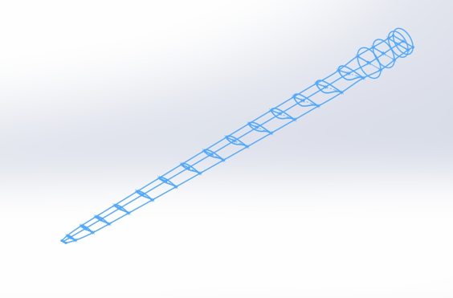

Blade element cross-sections showing twist variation
Domain with blade
Mesh refinement near the Blade tip
Vorticity visualization in the wake
This project involved the complete aerodynamic design and validation of a wind turbine blade using Blade Element Momentum Theory (BEMT) implemented in MATLAB, followed by CFD verification. The design process accounted for real-world aerodynamic losses while optimizing for maximum power extraction within the Betz limit.
Methodology:
BEMT Implementation
- Developed MATLAB code implementing BEMT equations
- Divided blade into 20 aerodynamic sections
- Iterative convergence for induction factors
- Incorporated Prandtl's tip loss correction
CFD Validation
- Created 3D CAD model from BEMT outputs
- Performed transient analysis with sliding mesh
- Compared performance with theoretical predictions
- Visualized flow separation and pressure distribution
Key Features:
- The BEMT code accounted for:
- Axial induction factor (a)
- Tangential induction factor (a')
- Prandtl tip loss factor
- Automated iterative convergence for each blade section
- Output twist angle and chord length distributions
- Calculated overall power coefficient (CP) and torque
Blade Element Momentum Theory
MATLAB
CFD
Aerodynamic Design
Wind Energy
Turbomachinery
Sliding Mesh
Betz Limit